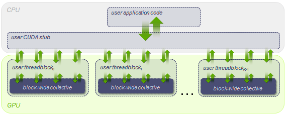
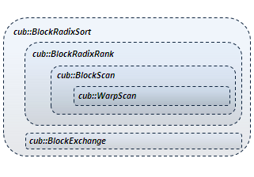
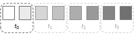
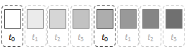

CUB
What is CUB?
CUB provides state-of-the-art, reusable software components for every layer of the CUDA programming model:
Parallel primitives
Thread primitives
Thread-level reduction, etc.
Safely specialized for each underlying CUDA architecture
Warp-wide “collective” primitives
Cooperative warp-wide prefix scan, reduction, etc.
Safely specialized for each underlying CUDA architecture
Block-wide “collective” primitives
Cooperative I/O, sort, scan, reduction, histogram, etc.
Compatible with arbitrary thread block sizes and types
Device-wide primitives
Parallel sort, prefix scan, reduction, histogram, etc.
Compatible with CUDA dynamic parallelism
Utilities
Fancy iterators
Thread and thread block I/O
PTX intrinsics
Device, kernel, and storage management
CUB’s collective primitives
Collective software primitives are essential for constructing high-performance, maintainable CUDA kernel code. Collectives allow complex parallel code to be re-used rather than re-implemented, and to be re-compiled rather than hand-ported.

Orientation of collective primitives within the CUDA software stack
As a SIMT programming model, CUDA engenders both scalar and collective software interfaces. Traditional software interfaces are scalar : a single thread invokes a library routine to perform some operation (which may include spawning parallel subtasks). Alternatively, a collective interface is entered simultaneously by a group of parallel threads to perform some cooperative operation.
CUB’s collective primitives are not bound to any particular width of parallelism or data type. This flexibility makes them:
Adaptable to fit the needs of the enclosing kernel computation
Trivially tunable to different grain sizes (threads per block, items per thread, etc.)
Thus CUB is CUDA Unbound.
An example (block-wide sorting)
The following code snippet presents a CUDA kernel in which each block of BLOCK_THREADS threads
will collectively load, sort, and store its own segment of (BLOCK_THREADS * ITEMS_PER_THREAD)
integer keys:
#include <cub/cub.cuh>
//
// Block-sorting CUDA kernel
//
template <int BLOCK_THREADS, int ITEMS_PER_THREAD>
__global__ void BlockSortKernel(int *d_in, int *d_out)
{
// Specialize BlockLoad, BlockStore, and BlockRadixSort collective types
using BlockLoadT = cub::BlockLoad<
int, BLOCK_THREADS, ITEMS_PER_THREAD, cub::BLOCK_LOAD_TRANSPOSE>;
using BlockStoreT = cub::BlockStore<
int, BLOCK_THREADS, ITEMS_PER_THREAD, cub::BLOCK_STORE_TRANSPOSE>;
using BlockRadixSortT = cub::BlockRadixSort<
int, BLOCK_THREADS, ITEMS_PER_THREAD>;
// Allocate type-safe, repurposable shared memory for collectives
__shared__ union {
typename BlockLoadT::TempStorage load;
typename BlockStoreT::TempStorage store;
typename BlockRadixSortT::TempStorage sort;
} temp_storage;
// Obtain this block's segment of consecutive keys (blocked across threads)
int thread_keys[ITEMS_PER_THREAD];
int block_offset = blockIdx.x * (BLOCK_THREADS * ITEMS_PER_THREAD);
BlockLoadT(temp_storage.load).Load(d_in + block_offset, thread_keys);
__syncthreads(); // Barrier for smem reuse
// Collectively sort the keys
BlockRadixSortT(temp_storage.sort).Sort(thread_keys);
__syncthreads(); // Barrier for smem reuse
// Store the sorted segment
BlockStoreT(temp_storage.store).Store(d_out + block_offset, thread_keys);
}
// Elsewhere in the host program: parameterize and launch a block-sorting
// kernel in which blocks of 128 threads each sort segments of 2048 keys
int *d_in = ...;
int *d_out = ...;
int num_blocks = ...;
BlockSortKernel<128, 16><<<num_blocks, 128>>>(d_in, d_out);
In this example, threads use cub::BlockLoad, cub::BlockRadixSort, and cub::BlockStore
to collectively load, sort and store the block’s segment of input items. Because these operations
are cooperative, each primitive requires an allocation of shared memory for threads to communicate
through. The typical usage pattern for a CUB collective is:
Statically specialize the primitive for the specific problem setting at hand, e.g., the data type being sorted, the number of threads per block, the number of keys per thread, optional algorithmic alternatives, etc. (CUB primitives are also implicitly specialized by the targeted compilation architecture.)
Allocate (or alias) an instance of the specialized primitive’s nested
TempStoragetype within a shared memory space.Specify communication details (e.g., the
TempStorageallocation) to construct an instance of the primitive.Invoke methods on the primitive instance.
In particular, cub::BlockRadixSort is used to collectively sort the segment of data items
that have been partitioned across the thread block. To provide coalesced accesses
to device memory, we configure the cub::BlockLoad and cub::BlockStore primitives
to access memory using a striped access pattern (where consecutive threads
simultaneously access consecutive items) and then transpose the keys into
a blocked arrangement of elements across threads.
To reuse shared memory across all three primitives, the thread block statically
allocates a union of their TempStorage types.
Why do you need CUB?
Writing, tuning, and maintaining kernel code is perhaps the most challenging, time-consuming aspect of CUDA programming. Kernel software is where the complexity of parallelism is expressed. Programmers must reason about deadlock, livelock, synchronization, race conditions, shared memory layout, plurality of state, granularity, throughput, latency, memory bottlenecks, etc.
With the exception of CUB, however, there are few (if any) software libraries of reusable kernel primitives. In the CUDA ecosystem, CUB is unique in this regard. As a SIMT library and software abstraction layer, CUB provides:
Simplicity of composition. CUB enhances programmer productivity by allowing complex parallel operations to be easily sequenced and nested. For example,
cub::BlockRadixSortis constructed fromcub::BlockExchangeandcub::BlockRadixRank. The latter is composed ofcub::BlockScanwhich incorporatescub::WarpScan.
High performance. CUB simplifies high-performance program and kernel development by taking care to implement the state-of-the-art in parallel algorithms.
Performance portability. CUB primitives are specialized to match the diversity of NVIDIA hardware, continuously evolving to accommodate new architecture-specific features and instructions. And because CUB’s device-wide primitives are implemented using flexible block-wide and warp-wide collectives, we are able to performance-tune them to match the processor resources provided by each CUDA processor architecture.
Simplicity of performance tuning:
Resource utilization. CUB primitives allow developers to quickly change grain sizes (threads per block, items per thread, etc.) to best match the processor resources of their target architecture
Variant tuning. Most CUB primitives support alternative algorithmic strategies. For example,
cub::BlockHistogramis parameterized to implement either an atomic-based approach or a sorting-based approach. (The latter provides uniform performance regardless of input distribution.)Co-optimization. When the enclosing kernel is similarly parameterizable, a tuning configuration can be found that optimally accommodates their combined register and shared memory pressure.
Robustness and durability. CUB just works. CUB primitives are designed to function properly for arbitrary data types and widths of parallelism (not just for the built-in C++ types or for powers-of-two threads per block).
Reduced maintenance burden. CUB provides a SIMT software abstraction layer over the diversity of CUDA hardware. With CUB, applications can enjoy performance-portability without intensive and costly rewriting or porting efforts.
A path for language evolution. CUB primitives are designed to easily accommodate new features in the CUDA programming model, e.g., thread subgroups and named barriers, dynamic shared memory allocators, etc.
How do CUB collectives work?
Four programming idioms are central to the design of CUB:
Generic programming. C++ templates provide the flexibility and adaptive code generation needed for CUB primitives to be useful, reusable, and fast in arbitrary kernel settings.
Reflective class interfaces. CUB collectives statically export their their resource requirements (e.g., shared memory size and layout) for a given specialization, which allows compile-time tuning decisions and resource allocation.
Flexible data arrangement across threads. CUB collectives operate on data that is logically partitioned across a group of threads. For most collective operations, efficiency is increased with increased granularity (i.e., items per thread).
Static tuning and co-tuning. Simple constants and static types dictate the granularities and algorithmic alternatives to be employed by CUB collectives. When the enclosing kernel is similarly parameterized, an optimal configuration can be determined that best accommodates the combined behavior and resource consumption of all primitives within the kernel.
Generic programming
We use template parameters to specialize CUB primitives for the particular problem setting at hand. Until compile time, CUB primitives are not bound to any particular:
Data type (int, float, double, etc.)
Width of parallelism (threads per thread block)
Grain size (data items per thread)
Underlying processor (special instructions, warp size, rules for bank conflicts, etc.)
Tuning configuration (e.g., latency vs. throughput, algorithm selection, etc.)
Reflective class interfaces
Unlike traditional function-oriented interfaces, CUB exposes its collective primitives as templated C++ classes. The resource requirements for a specific parameterization are reflectively advertised as members of the class. The resources can then be statically or dynamically allocated, aliased to global or shared memory, etc. The following illustrates a CUDA kernel fragment performing a collective prefix sum across the threads of a thread block:
#include <cub/cub.cuh>
__global__ void SomeKernelFoo(...)
{
// Specialize BlockScan for 128 threads on integer types
using BlockScan = cub::BlockScan<int, 128>;
// Allocate shared memory for BlockScan
__shared__ typename BlockScan::TempStorage scan_storage;
...
// Obtain a segment of consecutive items that are blocked across threads
int thread_data_in[4];
int thread_data_out[4];
...
// Perform an exclusive block-wide prefix sum
BlockScan(scan_storage).ExclusiveSum(thread_data_in, thread_data_out);
Furthermore, the CUB interface is designed to separate parameter fields by concerns. CUB primitives have three distinct parameter fields:
Static template parameters. These are constants that will dictate the storage layout and the unrolling of algorithmic steps (e.g., the input data type and the number of block threads), and are used to specialize the class.
Constructor parameters. These are optional parameters regarding inter-thread communication (e.g., storage allocation, thread-identifier mapping, named barriers, etc.), and are orthogonal to the functions exposed by the class.
Formal method parameters. These are the operational inputs/outputs for the various functions exposed by the class.
This allows CUB types to easily accommodate new programming model features (e.g., named barriers, memory allocators, etc.) without incurring a combinatorial growth of interface methods.
Flexible data arrangement across threads
CUDA kernels are often designed such that each thread block is assigned a segment of data items for processing.
Segment of eight ordered data items
When the tile size equals the thread block size, the mapping of data onto threads is straightforward (one datum per thread). However, there are often performance advantages for processing more than one datum per thread. Increased granularity corresponds to decreased communication overhead. For these scenarios, CUB primitives will specify which of the following partitioning alternatives they accommodate:
Blocked arrangement. The aggregate tile of items is partitioned evenly across threads in “blocked” fashion with threadi owning the ith segment of consecutive elements. Blocked arrangements are often desirable for algorithmic benefits (where long sequences of items can be processed sequentially within each thread). |
 Blocked arrangement across four threads (emphasis on items owned by thread0) |
Striped arrangement. The aggregate tile of items is partitioned across threads in “striped”
fashion, i.e., the |
 Striped arrangement across four threads (emphasis on items owned by thread0) |
The benefits of processing multiple items per thread (a.k.a., register blocking, granularity coarsening, etc.) include:
Algorithmic efficiency. Sequential work over multiple items in thread-private registers is cheaper than synchronized, cooperative work through shared memory spaces.
Data occupancy. The number of items that can be resident on-chip in thread-private register storage is often greater than the number of schedulable threads.
Instruction-level parallelism. Multiple items per thread also facilitates greater ILP for improved throughput and utilization.
Finally, cub::BlockExchange provides operations for converting between blocked
and striped arrangements.
Static tuning and co-tuning
This style of flexible interface simplifies performance tuning. Most CUB
primitives support alternative algorithmic strategies that can be
statically targeted by a compiler-based or JIT-based autotuner. (For
example, cub::BlockHistogram is parameterized to implement either an
atomic-based approach or a sorting-based approach.) Algorithms are also
tunable over parameters such as thread count and grain size as well.
Taken together, each of the CUB algorithms provides a fairly rich tuning
space.
Whereas conventional libraries are optimized offline and in isolation, CUB provides interesting opportunities for whole-program optimization. For example, each CUB primitive is typically parameterized by threads-per-block and items-per-thread, both of which affect the underlying algorithm’s efficiency and resource requirements. When the enclosing kernel is similarly parameterized, the coupled CUB primitives adjust accordingly. This enables autotuners to search for a single configuration that maximizes the performance of the entire kernel for a given set of hardware resources.
How do I get started using CUB?
CUB is implemented as a C++ header library. There is no need to build CUB separately. To use CUB primitives in your code, simply:
Download and unzip the latest CUB distribution
#includethe “umbrella”<cub/cub.cuh>header file in your CUDA C++ sources. (Or#includethe particular header files that define the CUB primitives you wish to use.)Compile your program with NVIDIA’s
nvccCUDA compiler, specifying a-I<path-to-CUB>include-path flag to reference the location of the CUB header library.
We also have a collection of simple CUB example programs.
How is CUB different than Thrust and Modern GPU?
CUB and Thrust
CUB and Thrust share some
similarities in that they both provide similar device-wide primitives for CUDA.
However, they target different abstraction layers for parallel computing.
Thrust abstractions are agnostic of any particular parallel framework (e.g.,
CUDA, TBB, OpenMP, sequential CPU, etc.). While Thrust has a “backend”
for CUDA devices, Thrust interfaces themselves are not CUDA-specific and
do not explicitly expose CUDA-specific details (e.g., cudaStream_t parameters).
CUB, on the other hand, is slightly lower-level than Thrust. CUB is specific to CUDA C++ and its interfaces explicitly accommodate CUDA-specific features. Furthermore, CUB is also a library of SIMT collective primitives for block-wide and warp-wide kernel programming.
CUB and Thrust are complementary and can be used together. In fact, the CUB project arose out of a maintenance need to achieve better performance-portability within Thrust by using reusable block-wide primitives to reduce maintenance and tuning effort.
CUB and Modern GPU
CUB and Modern GPU also share some similarities in that they both implement similar device-wide primitives for CUDA. However, they serve different purposes for the CUDA programming community. MGPU is a pedagogical tool for high-performance GPU computing, providing clear and concise exemplary code and accompanying commentary. It serves as an excellent source of educational, tutorial, CUDA-by-example material. The MGPU source code is intended to be read and studied, and often favors simplicity at the expense of portability and flexibility.
CUB, on the other hand, is a production-quality library whose sources are complicated by support for every version of CUDA architecture, and is validated by an extensive suite of regression tests. Although well-documented, the CUB source text is verbose and relies heavily on C++ template metaprogramming for situational specialization.
CUB and MGPU are complementary in that MGPU serves as an excellent descriptive source for many of the algorithmic techniques used by CUB.
Stable releases
CUB releases are labeled using version identifiers having three fields:
<epoch>.<feature>.<update>. The epoch field
corresponds to support for a major change or update to the CUDA programming model.
The feature field corresponds to a stable set of features,
functionality, and interface. The update field corresponds to a
bug-fix or performance update for that feature set. At the moment, we do
not publicly provide non-stable releases such as development snapshots,
beta releases or rolling releases. (Feel free to contact us if you would
like access to such things.)
Contributors
CUB is developed as an open-source project by NVIDIA. The primary contributor is the CCCL team.
Open Source License
CUB is available under the BSD 3-Clause “New” or “Revised” License